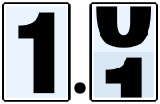

Skip to content

Bump My Version
How-To Guides
Initializing search
GitHub
Bump My Version
Changelog
Contributing
Explanation
Howtos
Reference
Tutorials
Bump My Version
GitHub
Bump My Version
Changelog
Contributing
Explanation
Explanation
The mental model used by Bump My Version
Howtos
Howtos
Avoiding incorrect replacements
Using Calendar Versioning (CalVer)
Custom version formats in different files
Multiple replacements within the same file
How to update a date in a file
Reference
Reference
Calendar versioning reference
CLI Reference
Configuration
Formatting context
Search and replace configuration
Version parts
Api
Api
bumpversion
bumpversion
aliases
autocast
bump
cli
config
config
create
files
files_legacy
models
utils
context
exceptions
files
indented_logger
scm
show
ui
utils
version_part
versioning
versioning
conventions
functions
models
serialization
visualize
yaml_dump
Subcommands
Subcommands
The show subcommand
Tutorials
Tutorials
Semantic versioning example
Usage
How-To Guides
¶
Avoid incorrect replacements
Custom version formats by file
Multiple replacements